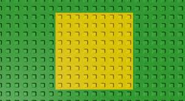
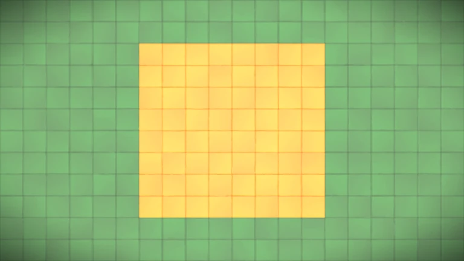
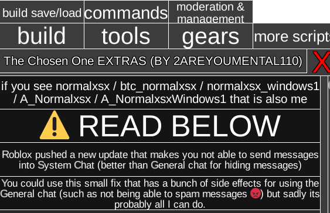
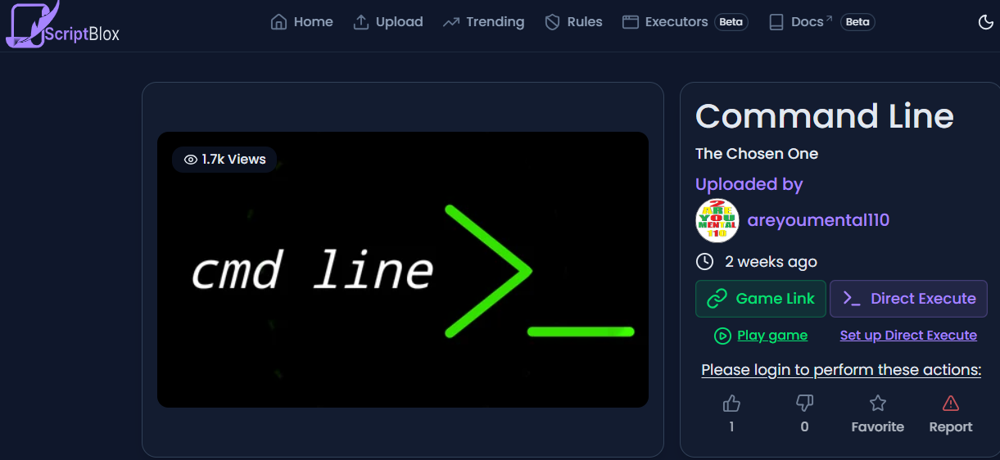

The Chosen One (Далі TCO)
TCO - це не дуже популярна гра у роблоксі, стабілний онлайн 1-1.5К. Суть цієї гри - у кого більше часу на таймері, той стає як його звуть "адміном", йому надаєтся доступ на всі команди. В грі також можно донатити свій час за допомогую команді donate (name) (time). Но то для чого грают - будівельництво. В грі є Б-Кит (Building Kit/B-Kit/B-Tools) в якому э Build, Delete, Paint, Shape, Shovel, і Sign.

Багі
Тут не так много багів. Але воні круті!
- Перший баг це "rotated blocks", блоки спавнятся по сітці и іх нельзя повернути, але якщо убрати в нього якір і поставити в нужномо положені, треба відалити і поставити на ньому дуже бистро - якщо ві отримаєте блок без якіра але який нельза драготь - дайте йому якір і він станить в нужому положені.
- Другій баг - це не такий потужний але прикольний, треба викапати в землі дірки 1х2х1 встати в ніжній блок поти закопати верхній а потім ніжній - ви будете в землі.
Команди
Тут іх БАГАТО! Щоб переглянути всі треба написати "cmds", але ось ті які треба знати :
- bkit - найважча команда яка даэ ігроку предмети з якими можно будувати все!
- enlighten - дає орб ігроку який якбито дає йому адмінку якщо його держати в руці, його можно було зробити перманентим але це попатчілі.
- donate - донати часу.
- joinvc/joinxl/joinog - ці команді отправляють вас в сервер с макс. 100 гравцями, у сервер куди можуть потрапити тількі якщо є вч, або в першу версію гри.
Чіти
Тут іх БАГАТО! Щоб переглянути всі треба написати "cmds", але ось ті які треба знати :
| Чіт 1 AGAR WARE |
 |
| Чіт 2 RomazDev Hub |
|
| Чіт 3 Extra Stuff |
 |
 |
Command Line Command Line - це чіт який дає ігроку фейкову адмінку, більш чітову ніж реальну, іспользує цей чіт повнітсю тількі ігровий чат. |
| Made In Heaven Text Bypasser Цей чіт просто добавляє куча тегів в текст там щоб роблокс пропускав любу маячю, ссилки, мати, і тд. |